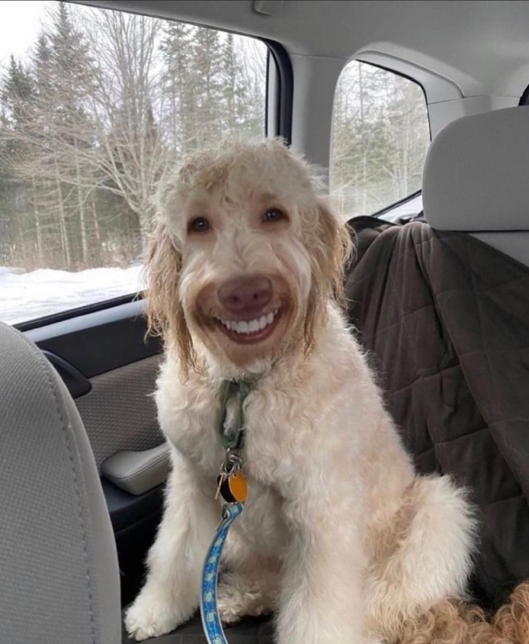

Een labradoodle is een hond die is ontstaan uit een kruising tussen een labrador en een poedel. Labradoodles staan bekend als vriendelijke, slimme en sociale honden. Ze zijn vaak erg gericht op hun baasje en vinden het leuk om samen te spelen en activiteiten te doen. Door hun energieke karakter hebben ze voldoende beweging en aandacht nodig. De vacht van een labradoodle kan verschillen, bijvoorbeeld krullend of golvend, en verhaart meestal minder dan die van veel andere hondenrassen. Daarom worden labradoodles soms gezien als een geschikte hond voor mensen die minder last willen hebben van hondenharen.